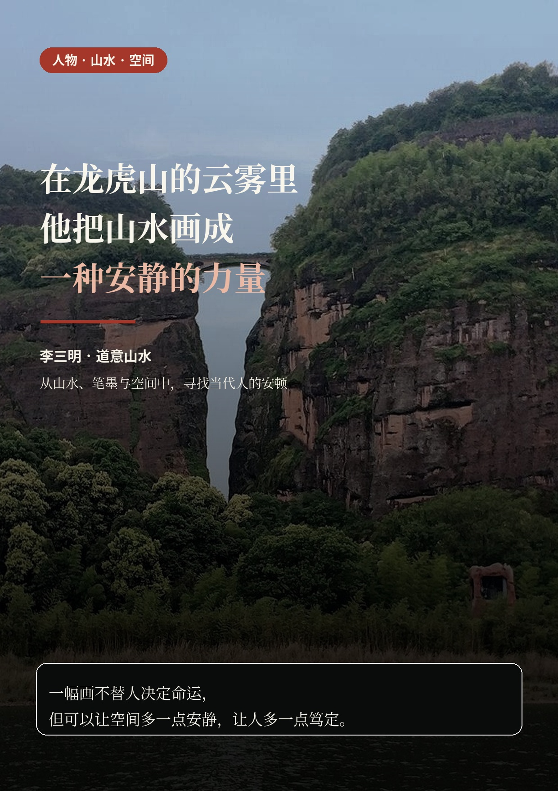

创作
从第一滴墨，到最后一方印
持续记录山水、虎画与真实创作过程，让笔墨、气韵和画面本身成为内容的支点。
中国画 · 山水 · 东方空间
李三明·道意山水是以中国山水画创作为核心的艺术项目，呈现山水、虎画与“今日如愿画”。从龙虎山的山水与道家自然观出发，以笔墨、温和祝愿和东方空间配画连接当代生活。

“山是稳，水是流，留白是呼吸。”
一幅画不替人决定命运，但它可以让一间屋子多一点安静，让一个人多一点笃定，让日常重新拥有山水与呼吸。
九张图读懂


创作
持续记录山水、虎画与真实创作过程，让笔墨、气韵和画面本身成为内容的支点。
栏目
把对家人、工作、远行、成长或团圆的心愿，转化为一幅画的创作起点。
空间
东方空间配画以东方美学为出发点，为茶室、办公室和会客厅搭配山水画，关注采光、墙面比例、家具尺度与装裱方式。